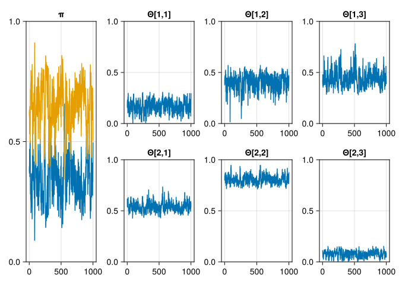

Bayesian Latent Class Analysis (BLCA) is a powerful statistical method used to classify subjects into unobserved (latent) groups based on their responses to observed variables. The method relies on the Bayesian framework to incorporate prior knowledge and manage uncertainty, making it robust and flexible for various applications, such as in social sciences, medicine, and marketing.
Basic Concepts of Latent Class Analysis (LCA)
LCA models assume that there is an underlying categorical variable (latent class) that explains the patterns of responses observed in the data. Each subject belongs to one of these latent classes, and the probability of each observed response depends on the latent class membership.
Bayesian Framework
In the Bayesian approach, we introduce prior distributions for the model parameters and update these priors with the observed data to obtain posterior distributions. This incorporation of prior knowledge can help guide the analysis, especially when data is sparse or noisy.
Generative model
From the diagram we can see that the joint distribution can be decomposed into the following factors
\[ P(\mathbf{y}, \mathbf{c}, \mathbf{\Theta}, \pi | u, \alpha, \beta) = P(\mathbf{y} | \mathbf{c}, \mathbf{\Theta}) P(\mathbf{c}|\pi) P(\pi|u) P(\mathbf{\Theta}| \alpha, \beta) \]
Assume \(N\) subjects are distributed over \(C\) classes.
The Dirichlet distribution is the conjugate prior of the Categorical and Multinomial distributions. The mean is \(\pi_j = u_j / \sum_j u_j\) while the mode is \((u_j - 1)/\sum_j(u_j - 1)\) for \(u_j > 1\). It is the appropriate prior when we need to make a \(C\)-way choice. The prior probabilities for the class membership is assumed to be Dirichlet
\[ \pi \sim \mathrm{Dirichlet}(u_1, \ldots, u_C) \propto \prod_{j=1}^C \pi_j^{u_j - 1} \]
The probability that subject \(i\) is in class \(j\) is given by
\[ P(c_{i} = j | \pi) = \pi_j \]
Given \(\pi\), the class assignments for the \(N\) subjects are independent. Therefore,
\[ P(\mathbf{c}|\pi) = \prod_{i=1}^N P(c_i|\pi) \]
If we let \(N_j\) denote the number of subjects in class \(j\), this expression can be simplified to
\[ P(\mathbf{c}|\pi) = \prod_{j=1}^C \pi_j^{N_j} \]
Let \(\Theta_{jk}\) be the probability that a subject of class \(j\) answers question \(k\) positive. Then
\[ P(y_{ik} = 1 | c_{i} = j, \mathbf{\Theta}) = \Theta_{jk} \]
and \[ P(y_{ik} = 0 | c_{i} = j, \mathbf{\Theta}) = 1 - \Theta_{jk} \]
Answering a yes/no question is a two-way choice (or Bernoulli experiment). The Beta distribution is an appropriate prior for a two-way choice, and we assume \(\Theta_{jk}\) to be Beta distributed
\[ P(\mathbf{\Theta}) = \prod_{j=1}^C \prod_{k=1}^K \mathrm{Beta}(\alpha_{jk}, \beta_{jk}) \propto \prod_{j=1}^C \prod_{k=1}^K \Theta_{jk}^{\alpha_{jk} - 1} (1 - \Theta_{jk})^{\beta_{jk} - 1} \]
Looking at the plate diagram, we can see that the \(K\) questions the \(N\) subjects answer are independent given it classes \(\mathbf{c}\) and parameters \(\mathbf{\Theta}\). Therefore,
\[ P(\mathbf{y} | \mathbf{c}, \mathbf{\Theta}) = \prod_{i=1}^N \prod_{k=1}^K \Theta_{c_i k}^{y_{ik}}(1-\Theta_{c_i k})^{1-y_{ik}} \]
This expression can be simplified by counting how often the factors \(\Theta_{jk}\) and \((1-\Theta_{jk})\) occur.
Let \(N_{jk}\) denote number of times the question \(k\) was answered positive for members of class \(j\), then \(N_j - N_{jk}\) the number of times it was answered negative.
\[ P(\mathbf{y} | \mathbf{c}, \mathbf{\Theta}) = \prod_{j=1}^C \prod_{k=1}^K \Theta_{jk}^{N_{jk}} (1-\Theta_{jk})^{N_j - N_{jk}} \]
Putting everything together, we end up with the following expression for the joint probability
\[ P(\mathbf{y}, \mathbf{c}, \mathbf{\Theta}, \pi | u, \alpha, \beta) \propto \left( \prod_{j=1}^C \prod_{k=1}^K \Theta_{jk}^{N_{jk}} (1-\Theta_{jk})^{N_j -N_{jk}} \right) \left( \prod_{j=1}^C \pi_j^{N_j} \right) \left( \prod_{j=1}^C \pi_j^{u_j - 1} \right) \left( \prod_{j=1}^C \prod_{k=1}^K \Theta_{jk}^{\alpha_{jk} - 1} (1 - \Theta_{jk})^{\beta_{jk} - 1} \right) \]
Some rearrangement yields
\[ P(\mathbf{y}, \mathbf{c}, \mathbf{\Theta}, \pi | u, \alpha, \beta) \propto \left( \prod_{j=1}^C \pi_j^{N_j + u_j - 1} \right) \left( \prod_{j=1}^C \prod_{k=1}^K \Theta_{jk}^{N_{jk} + \alpha_{jk} - 1} (1 - \Theta_{jk})^{N_j - N_{jk} + \beta_{jk} - 1} \right) \]
This shows that the posterior joint distribution factors into a Dirichlet posterior for \(\pi\) and a product of Beta posteriors for \(\Theta\).
We can generate data according to the above model using the following Julia code
using Distributions
C = 2 # number of classes, j = 1 .. C
K = 3 # number of questions, k = 1 .. K
N = 1000 # number of subjects, i = 1 .. N
π = [0.2, 0.8]
Θ = [0.1 0.3 0.7;
0.5 0.8 0.1]
c = rand(Categorical(π), N)
gen = (;π, Θ, c)
y = rand.(Bernoulli.(Θ[c, :]));using CairoMakie
f = Figure(;size=(600, 400))
for j in 1:K
hist(f[1,j], y[:, j]; axis = (;title = "Question $j"))
end
f┌ Warning: Found `resolution` in the theme when creating a `Scene`. The `resolution` keyword for `Scene`s and `Figure`s has been deprecated. Use `Figure(; size = ...` or `Scene(; size = ...)` instead, which better reflects that this is a unitless size and not a pixel resolution. The key could also come from `set_theme!` calls or related theming functions.
└ @ Makie ~/.julia/packages/Makie/qMluh/src/scenes.jl:227Gibbs sampling
Gibbs sampling is a Markov Chain Monte Carlo (MCMC) method used to approximate the posterior distributions of the model parameters. It iteratively samples from the conditional distributions of each parameter given the current values of the others.
Above we had derived an expression for the joint probability \(P(\mathbf{y}, \mathbf{c}, \mathbf{\pi}, \mathbf{\Theta})\). As \(\mathbf{y}\) is observed, we only need to create conditional samples for \(\mathbf{c}\), \(\mathbf{\pi}\), and \(\mathbf{\Theta}\).
\[ P(\mathbf{\pi} | \mathbf{y}, \mathbf{c}, \mathbf{\Theta}) = \mathrm{Dirichlet}(\ldots, u_j + N_j, \ldots) \]
\[ P(\Theta_{jk} | \mathbf{y}, \mathbf{c}, \mathbf{\pi}) = \mathrm{Beta}(\alpha_{jk} + N_{jk}, \beta_{jk} + N_j - N_{jk}) \]
To draw a sample for \(c_i\), we have to compute \[ P(c_i | \mathbf{y}, \mathbf{c}_{-i}, \mathbf{\Theta}, \pi) \]
where \(\mathbf{c}_{-i}\) denotes the vector of class membership for all subjects except \(i\). From the plate diagram, we can see that conditioned on \(\pi\) and \(\mathrm{\Theta}\), \(c_i\) only depends on \(\pi\), \(\mathrm{\Theta}\), and \(y_{ik}\). We have
\[ P(c_i, \mathbf{y_i} | \mathbf{\Theta}, \pi) = P(c_i|\pi) \prod_{k=1}^K P(y_{ik}|c_i, \mathrm{\Theta}) \]
\[ P(c_i = j, \mathbf{y_i} | \mathbf{\Theta}, \pi) = \pi_j \prod_{k=1}^K \Theta_{jk}^{y_{ik}}(1 - \Theta_{jk})^{(1-y_{ik})} \]
The Gibbs sampling algorithm can be summarized as follows:
- Initialize \(\mathbf{\Theta}\), \(\pi\), \(\mathbf{c}\)
- compute \(N_j\), \(N_{jk}\)
- for iter in 1:max_iter
- for i in 1:N
- sample \(c_i\), and update \(N_j\) and \(N_{jk}\)
- sample \(\mathbf{\pi}\) using \(N_j\)
- sample \(\mathbf{\Theta}\) using \(N_{jk}\)
- for i in 1:N
using DataFrames
using StatsBase: sample, Weights
using StatsFuns: logsumexp
# Initialise
u = ones(C)
α = ones(C,K)
β = ones(C,K)
π = rand(Dirichlet(u))
Θ = rand.(Beta.(α, β))
c = rand(Categorical(π), N)
N_j = zeros(C) # number of subjects in class
N_jk = zeros(C, K) # number of positive answers for class j and question k
for i in 1:N
j = c[i]
N_j[j] += 1
for k in 1:K
N_jk[j, k] += y[i,k]
end
end
max_iter = 11000
burnin = 1000
thinning = 10
samples = DataFrame()
for iter in 1:max_iter
# sample c[i]
for i in 1:N
# remove c[i]from N_j and N_jk
N_j[c[i]] -= 1
for k in 1:K
N_jk[c[i], k] -= y[i,k]
end
# compute p(c_i = j)
log_p_c = zeros(Float64, C)
for j in 1:C
log_p_c[j] += log(π[j])
for k in 1:K
log_p_c[j] += y[i,k]*log(Θ[j,k]) + (1.0 - y[i,k])*log(1.0 - Θ[j,k])
end
end
p_c = exp.(log_p_c .- logsumexp(log_p_c))
# and sample c[i]
c[i] = sample(1:K, Weights(p_c))
# add c[i] to N_j and N_jk
N_j[c[i]] += 1
for k in 1:K
N_jk[c[i], k] += y[i,k]
end
end
# sample \pi
π = rand(Dirichlet(u .+ N_j))
# sample \Theta
Θ = rand.(Beta.(α .+ N_jk, β .+ N_j .- N_jk))
if iter > burnin && (iter - burnin) % thinning == 0
push!(samples, (;π, Θ, c = copy(c)))
end
endLet’s look at trace plots of the sampled parameters:
f = Figure()
lines(f[1:2,1], [x[1] for x in samples.π]; axis = (;title = "π"))
lines!(f[1:2,1], [x[2] for x in samples.π])
ylims!(0,1)
for j in 1:C
for k in 1:K
lines(f[j,k+1], [x[j, k] for x in samples.Θ]; axis = (;title = "Θ[$j,$k]"))
ylims!(0,1)
end
end
f┌ Warning: Found `resolution` in the theme when creating a `Scene`. The `resolution` keyword for `Scene`s and `Figure`s has been deprecated. Use `Figure(; size = ...` or `Scene(; size = ...)` instead, which better reflects that this is a unitless size and not a pixel resolution. The key could also come from `set_theme!` calls or related theming functions.
└ @ Makie ~/.julia/packages/Makie/qMluh/src/scenes.jl:227
Expectation-Maximization (EM)
The Expectation-Maximization method results in point estimates of the parameters \(\mathbf{\Theta}\) and \(\pi\), and probability distributions of latent variables \(\mathbf{c}\).
Similar to the Gibbs sampling, we compute for each subject the class membership probabilities \(P(\mathbf{c}|\mathbf{\Theta}, \pi)\). EM uses the joint class distributions to compute the MLE of parameters \(\pi\) and \(\mathbf{\Theta}\).
\[ \pi_j = \frac{\sum_{i=1}^N P(c_i = j|\mathbf{\Theta}, \pi)}{N} = \frac{N_j}{N} \]
\[ \Theta_{jk} = \frac{\sum_{i=1}^N P(c_i=j|\mathbf{\Theta}, \pi) y_{ik}} {\sum_{i=1}^N P(c_i=j|\mathbf{\Theta}, \pi)} = \frac{N_{jk}}{N_j} \]
If one also incorporates prior counts (\(u\) and \(\alpha_{jk}\), \(\beta_{jk]}\) above), the MLE is replaced by a MAP estimate.
\[ \pi_j = \frac{N_j + u_j - 1}{N + \sum_{j=1}^C (u_j - 1)} \]
\[ \Theta_{jk} = \frac{N_{jk} + \alpha_{jk} - 1}{N_j + \alpha_{jk} + \beta_{jk} - 2} \]
References
Resnik et al.(2010), Gibbs sampling for the uninitiated, http://users.umiacs.umd.edu/~resnik/pubs/LAMP-TR-153.pdf
Li et al.(2019), Bayesian Latent Class Analysis Tutorial https://www.ncbi.nlm.nih.gov/pmc/articles/PMC6364555/, but here the notation seems seriously flawed